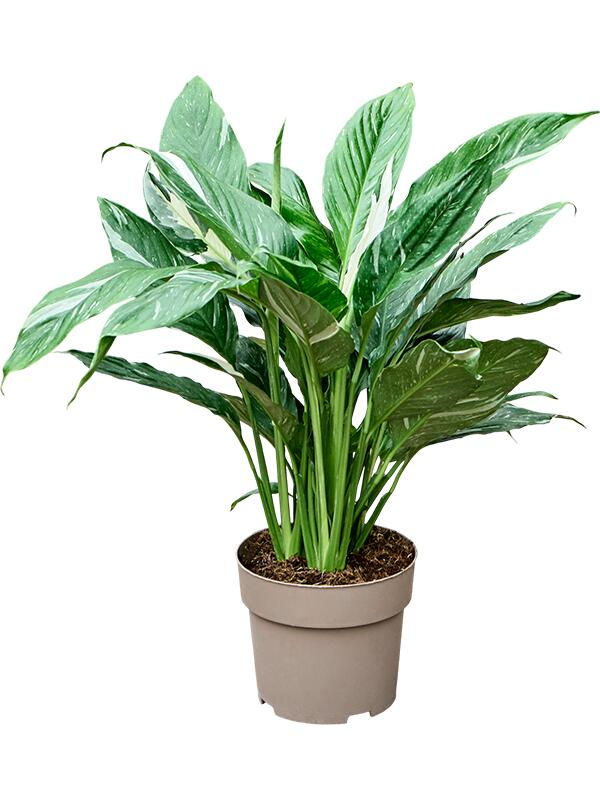

Спатифиллум "Женское счастье"

Нужна полутень,
опрыскивание 2 раза в неделю
Цена: 1299 руб
Поставка из влажных тропических лесов Америки!
Имеет белые цветы-паруса и блестящие листья.
Очищает воздух от аммиака и бензола. Цветёт до 2 месяцев!